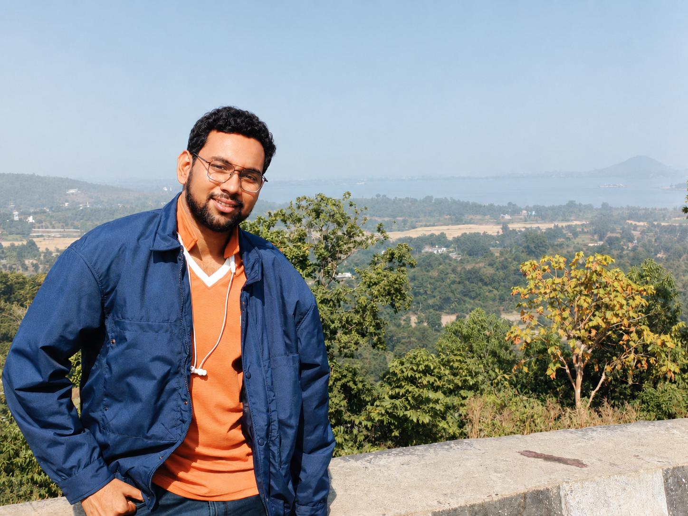

01
Quantum learning theory
Generalization guarantees for quantum learners through Rényi divergences, information-theoretic stability, and differential privacy.
Quantum information · quantum learning · quantum communication
PhD researcher studying information, learning, and communication in quantum settings.
Senior Research Fellow
Electronics and Communication Sciences Unit
Indian Statistical Institute, Kolkata
Ayanava Dasgupta is a Senior Research Fellow and doctoral researcher in Computer Science at the Indian Statistical Institute (ISI), Kolkata, supervised by Dr. Naqueeb Ahmad Warsi. He holds an M.Tech in Computer Science from ISI Kolkata and a B.Tech in Computer Science & Engineering from GCELT, Kolkata. A recipient of the TCS Research Fellowship, his research investigates quantum information theory, quantum learning theory, one-shot communication protocols, and statistical generalization bounds.

01 / Research
I develop information-theoretic tools for quantum communication and quantum learning. My work spans one-shot protocols, subspace methods, hypothesis testing, and the relationship between privacy, stability, and generalization.
01
Generalization guarantees for quantum learners through Rényi divergences, information-theoretic stability, and differential privacy.
02
Subspace intersections and unions, composite hypothesis testing, and one-shot tools for quantum information processing.
03
Authenticated classical–quantum channels, arbitrarily varying multiple-access channels, and quantum network theory.
Research profiles
02 / Publications and Preprints
For the complete list and linked records, see my full CV.
with Masahito Hayashi and Naqueeb Ahmad Warsi
with Naqueeb Ahmad Warsi and Premanshu Chatterjee
with Naqueeb Ahmad Warsi and Masahito Hayashi
with Naqueeb Ahmad Warsi and Masahito Hayashi
with Naqueeb Ahmad Warsi and Masahito Hayashi
with Naqueeb Ahmad Warsi and Masahito Hayashi
with Naqueeb Ahmad Warsi
03 / Academic background
Indian Statistical Institute, Kolkata
Advisor: Dr. Naqueeb Ahmad Warsi
Electronics and Communication Sciences Unit, Indian Statistical Institute, Kolkata
Indian Statistical Institute, Kolkata · 85.3%
Government College of Engineering and Leather Technology, Kolkata · DGPA 9.51/10
04 / Teaching Exprience
Supporting rigorous foundations in information theory, coding, and mathematics.
Teaching Assistant
Abstract Algebra and Number Theory
Indian Statistical Institute, Kolkata · Instructor: Dr. Sumanta Ghosh
Teaching Assistant
Coding Theory
Indian Statistical Institute, Kolkata · Instructor: Dr. Sumanta Ghosh
05 / Get in touch